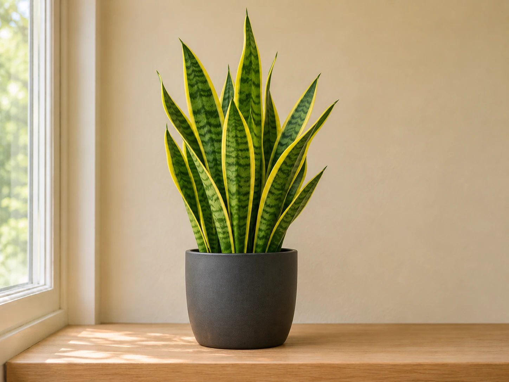

First run, without sign-up first
Direction E carried through the whole first run. Two changes from the last page: a fixed type scale (the sizes were jumping around), and the account now comes after the person has scanned a plant and seen the result. Three ways to place the account are compared first, then the recommended flow screen by screen.
Type, fixed
What was off: plant names were 58 px extra-condensed next to 13–14 px body text, with four different in-between sizes and two different condensed widths. Now there are six sizes, matched to iOS Dynamic Type (17 pt body), and one condensed width (75 %) used only for names and screen titles.
Display 40 · cond.StripesLarge title 32 · cond.PlantsTitle 21 · cond.MontyHeadline 17 semiboldWater left for about 9 daysBody 17Damp, 41 %Subhead 15Monstera, bedroomFootnote 13About 500 ml of 705 mlWhere the account goes: three models
Evidence (Lazyweb): Duolingo asks for a profile only after the first lesson, framed as "Don't lose your progress" (screens:05704a8529064e26032c3f68). Cal AI puts "Save your progress" with Apple, Google and email at the very end of a long onboarding (screens:09e5e4bb90d854ff5304044f). Atoms lets people use the app as a "Guest account" and asks later from the profile (screens:1fae8878be5995bbfe14420c). Common thread: ask when there is something to lose, and say what is kept.
A. Scan first, account to keep it Recommended
- The first thing people do is the most impressive thing: point the camera, get an answer.
- The account is asked at "Save Stripes", when there is a named plant and its photo to lose.
- Pairing a module always happens after the account, so hardware is never tied to a guest.
- Cost: one free identification per install before the account; needs a guest session on the server.
B. Guest until the module
- No account at all until a module is paired, or until the person taps "Keep my plants" in Settings.
- Lowest friction, like Atoms.
- Risk: a guest who deletes the app or changes phone loses every plant and photo. Plant.id costs money per call, and a guest limit is easy to dodge by reinstalling.
C. Module first
- For someone holding the box: setup starts with the hardware.
- The account comes before pairing, which feels natural when unboxing a device.
- Weak for anyone who downloaded the app first, and the account is again the second screen.
- Best kept as a branch of A: the Welcome screen offers "Set up a module" as a second way in.
Backend note (needs your OK, not part of this design pass): A and B need Supabase anonymous sign-in, so the first scan has a user id for storage and limits. Turning the guest into a real account keeps the same id, so the plant carries over. Guests need their own small identify limit (suggest 3, not 20) and a captcha on guest sign-in, or the Plant.id key can be drained by reinstalling. "Continue with Apple / Google" also needs setting up; if Google is offered on iOS, Apple must be offered too.
Model A, screen by screen

Plants that water themselves
Scan a plant to see what it is and how it's doing. Add a Plant Care module and it takes care of the watering.
About halfway round
Very likely
Peacock plant
Calathea makoyana
Likes steady moisture and indirect light. Its leaves curl when it's thirsty.
Name and place
Name
Room
Light where it stands
Bright
Near a sunny window
Medium
A few steps away
Low
Far from windows
Keep Stripes
Create an account so Stripes, its photos and its module stay with you if you change or lose your phone.
By continuing you agree to the Terms and Privacy Policy.
Stripes looks healthy
No signs of pests or disease in this photo. A few leaf edges are brown, which usually means the air is dry.
Checked from your photo. Take another any time from Stripes' page.
Does Stripes have a module?
The Plant Care module sits in the saucer, reads the soil and waters from its own tank. Setting one up takes about two minutes.
Connect the module
Hold the button on the module until the light blinks, join its Wi-Fi, then type this code:
7KQ4 M2XP
Code works until 09:56
Fill the tank
Open the cap on the saucer and pour until the water reaches the top of the hole.
The tank is full.
Stripes gets its first drink when the soil starts to dry.
Hear about it when Stripes needs you
Only when you have to do something. Nothing about watering that went fine.
Stripes
The tank needs refilling. Watering is paused until then.
Monty
Not heard from since 09:12. The module may be out of Wi-Fi range.
Plants
2 need you
Stripes
Calathea, living room
Tank needs refilling

Monty
Monstera, bedroom
Not heard from since 09:12
2 doing well

Sid
Next drink in about 2 days

Olive
Learning how fast it drinks
Sid
Dracaena trifasciata, hall
Water left for about 9 days
Next drink in about 2 days.